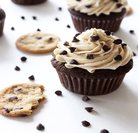

A cupcake (also British English: fairy cake; Hiberno English: bun; Australian
English: fairy cake or patty cake) is a small cake designed to serve one
person, which may be baked in a small thin paper or aluminum cup. As with
larger cakes, icing and other cake decorations, such as candy, may be applied.
Examples of Cupcakes
Chocolate Chip Cheesecakes

These are a simple cheesecake batter baked in a standard muffin pan, and no
waterbath or other special equipment is required. The pans are lined with muffin
wrappers, which make them easy to remove after baking, and a graham cracker crumb
mixture is pressed into each one.
The crust bakes along with the cheesecake. The cheesecake batter is a thick, creamy
mixture of cream cheese and a bit of sour cream (or greek yogurt will also work) and it
bakes up to have a rich, creamy texture. Chocolate chips are added on top of the
crust before the batter is added to each of the muffin cups and are also sprinkled
on top of each cheesecake before baking.
These cupcakes are packed full of cinnamon and brown sugar, with two layers of
cinnamon-swirl inside and topped with a generous helping of streusel. The aroma
as they bake is phenomenal and your entire kitchen will be filled with the scent
of cinnamon. After they cool for just a few minutes they of course need a little
drizzle of a vanilla glaze icing on top, because you simply cannot eat a cinnamon
roll unless it is slath
They are from Cupcake Jemma and are a great weekend bake.
Perfect for spring and summer baking projects, weddings, bridal and baby showersd.
They may be tiny, but poppy seeds are packed with a subtle, nutty, peppery flavour
that goes perfectly with the zesty lemon sponge.